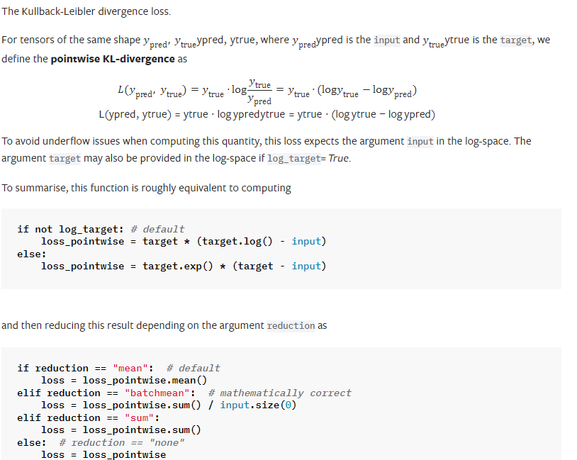
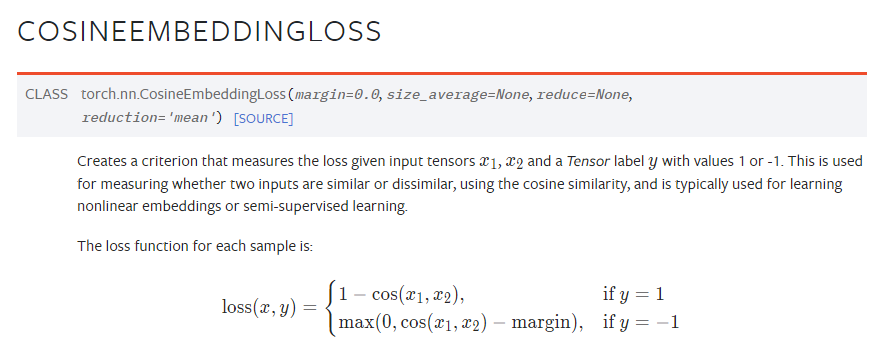

常见损失函数总结
二分类交叉熵损失函数BCELoss
计算二分类任务时的交叉熵（Cross Entropy）函数。在二分类中，label是{0,1}。对于进入交叉熵函数的input为概率分布的形式。一般来说，input为sigmoid激活层的输出，或者softmax的输出。
$$
loss(x,y) = -y*log(x)-(1-y)*log(1-x)
$$
1 | |
交叉熵损失函数CrossEntropyLoss
$$
loss(x,class) = -log(\frac{e^{x[class]}}{\sum_{i=1}^{n}e^{x[i]}})= -x[class]+log(\sum_{i=1}^{n}e^{x[i]})
$$
1 | |
L1损失函数L1Loss
也称为Mean Absolute Error，即平均绝对误差(MAE),它衡量的是预测值与真实值之间距离的平均误差幅度，作用范围为0到正无穷。
- 优点：无论对于什么样的输入值，都有着稳定的梯度，不会导致梯度爆炸问题，具有较为稳健性的解
- 缺点：在中心点是折点，不能求导，梯度下降时要是恰好学习到w=0就没法接着进行了
同样的我们可以在一定的假设下通过最大化似然得到 MAE 损失的形式，假设模型预测与真实值之间的误差服从拉普拉斯分布 Laplace distribution（ ），则给定一个 模型输出真实值 的概率为
MAE 和 MSE 作为损失函数的主要区别是：MSE 损失相比 MAE 通常可以更快地收敛，但 MAE 损失对于 outlier 更加健壮，即更加不易受到 outlier 影响。
MSE 通常比 MAE 可以更快地收敛。当使用梯度下降算法时，MSE 损失的梯度为 ，而 MAE 损失的梯度为 ，即 MSE 的梯度的 scale 会随误差大小变化，而 MAE 的梯度的 scale 则一直保持为 1，即便在绝对误差 很小的时候 MAE 的梯度 scale 也同样为 1，这实际上是非常不利于模型的训练的。当然你可以通过在训练过程中动态调整学习率缓解这个问题，但是总的来说，损失函数梯度之间的差异导致了 MSE 在大部分时候比 MAE 收敛地更快。这个也是 MSE 更为流行的原因。
MAE 对于 outlier 更加 robust。我们可以从两个角度来理解这一点
$$
loss(x,y) = \frac{1}{n}\sum_{i=1}^{n}|x_i-y_i|
$$
1 | |
下面是L1Loss的LOSS图：
L2损失函数/MSE损失函数MSELoss
均方误差（Mean Square Error,MSE），模型预测值f(x)和样本真实值y之间差值平方的平均值。
- 优点：各点都连续光滑，方便求导，具有较为稳定的解；对离群点（Outliers）或者异常值更具有鲁棒性。
- 缺点：不是特别的稳健，因为当函数的输入值距离真实值较远的时候，对应loss值很大在两侧，则使用梯度下降法求解的时候梯度很大，可能导致梯度爆炸； 由图可知其在0点处的导数不连续，使得求解效率低下，导致收敛速度慢；而对于较小的损失值，其梯度也同其他区间损失值的梯度一样大，所以不利于网络的学习。
可以看到这个实际上就是均方差损失的形式。也就是说在模型输出与真实值的误差服从高斯分布的假设下，最小化均方差损失函数与极大似然估计本质上是一致的，因此在这个假设能被满足的场景中（比如回归），均方差损失是一个很好的损失函数选择；当这个假设没能被满足的场景中（比如分类），均方差损失不是一个好的选择。链接
$$
loss(x,y) = \frac{1}{n}\sum_{i=1}^{n}(x_i-y_i)^2
$$
1 | |
下面是L2Loss的LOSS图：
平滑L1 (Smooth L1)损失函数SmoothL1Loss
L1的平滑输出，其功能是减轻离群点带来的影响。即平滑的L1损失（SLL）。SLL通过综合L1和L2损失的优点，在0点处附近采用了L2损失中的平方函数，解决了L1损失在0点处梯度不可导的问题，使其更加平滑易于收敛。此外，在|x|>1的区间上，它又采用了L1损失中的线性函数，使得梯度能够快速下降。真实值和预测值差别较小时（绝对值差小于1），梯度也会比较小（损失函数比普通L1 loss在此处更圆滑），可以收敛得更快。真实值和预测值差别较大时，梯度值足够小（普通L2 loss在这种位置梯度值就很大，容易梯度爆炸）
$$
loss(x,y) = \frac{1}{2}(x-y)^2 …… if |x-y|<\delta
$$
$$
loss(x,y) = \delta|x-y|-\frac{1}{2}\delta^2 …… other
$$
三者区别
- （1）L1 loss在零点不平滑，此处不可导，所以在w=0时没法接着梯度下降了，用的少
- （2）L2 loss对离群点比较敏感，离群点处的梯度很大，容易梯度爆炸
- （3）smooth L1 loss结合了L1和L2的优点，修改了零点不平滑问题，且比L2 loss对异常值的鲁棒性更强
KL散度KLDivLoss
计算KL散度，也就是计算相对熵。用于连续分布的距离度量，并且对离散采用的连续输出空间分布进行回归通常很有用。
$$
KL(P,Q) = \sum_{i=1}^nP(x_i)(logP(x_i)-logQ(x_i))
$$1
2
3
4inputs = torch.tensor([[0.5, 0.3, 0.2], [0.2, 0.3, 0.5]])
target = torch.tensor([[0.9, 0.05, 0.05], [0.1, 0.7, 0.2]], dtype=torch.float)
loss = nn.KLDivLoss(reduction='mean')
loss(inputs,target)余弦相似度CosineEmbeddingLoss
$$
cos(A,B) = \frac{A \cdot B}{||A||||B||}
$$1
2
3
4
5
6
7loss_f = nn.CosineEmbeddingLoss()
inputs_1 = torch.tensor([[0.3, 0.5, 0.7], [0.3, 0.5, 0.7]])
inputs_2 = torch.tensor([[0.1, 0.3, 0.5], [0.1, 0.3, 0.5]])
target = torch.tensor([1, -1], dtype=torch.float)
output = loss_f(inputs_1,inputs_2,target)
print('CosineEmbeddingLoss损失函数的计算结果为',output)